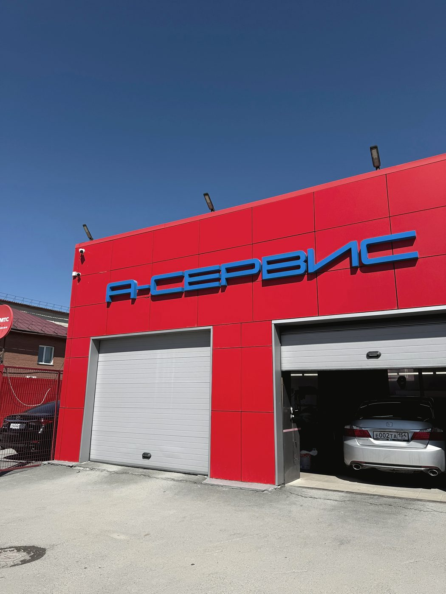
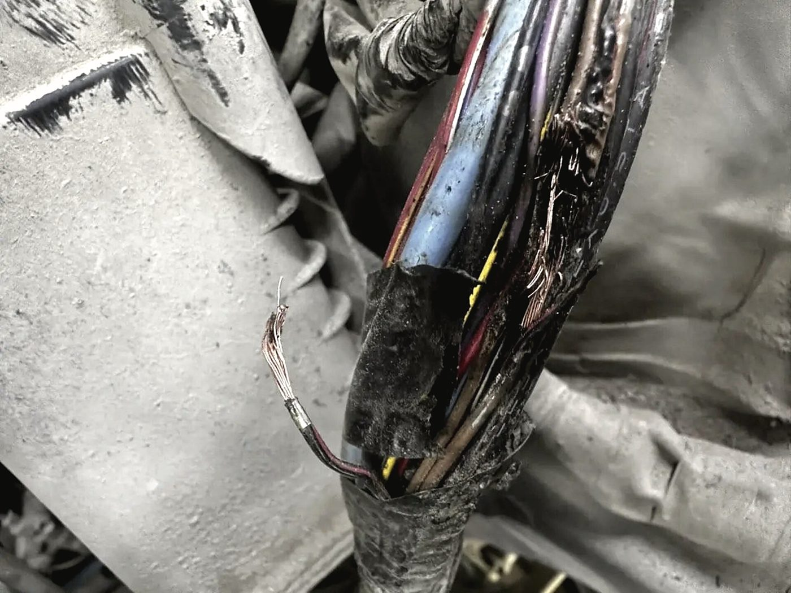
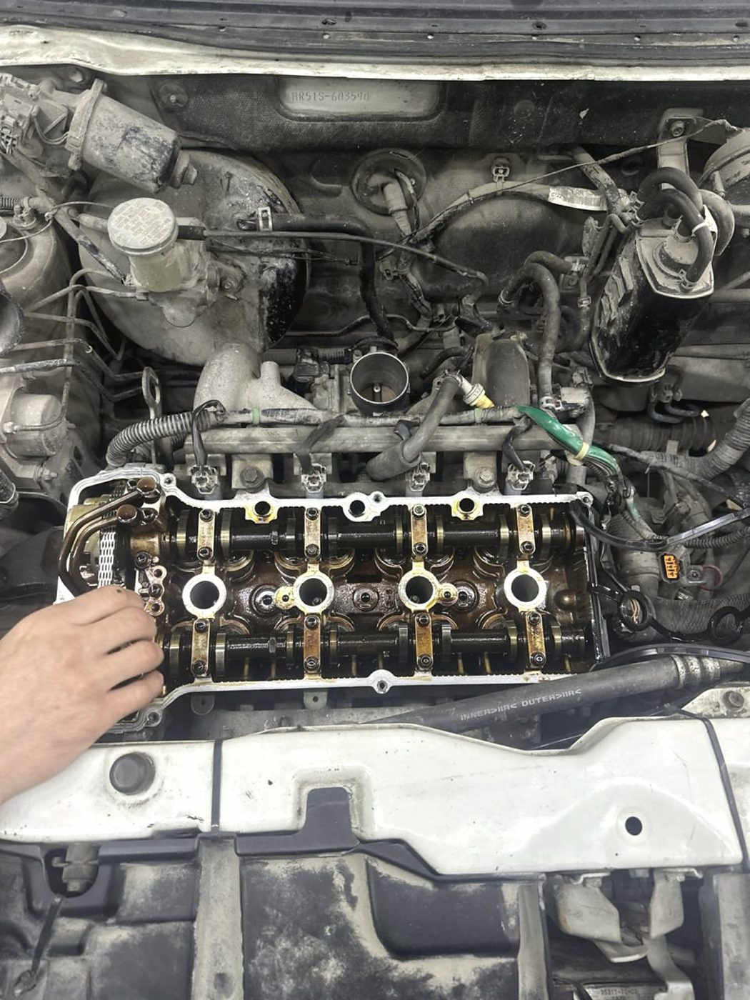
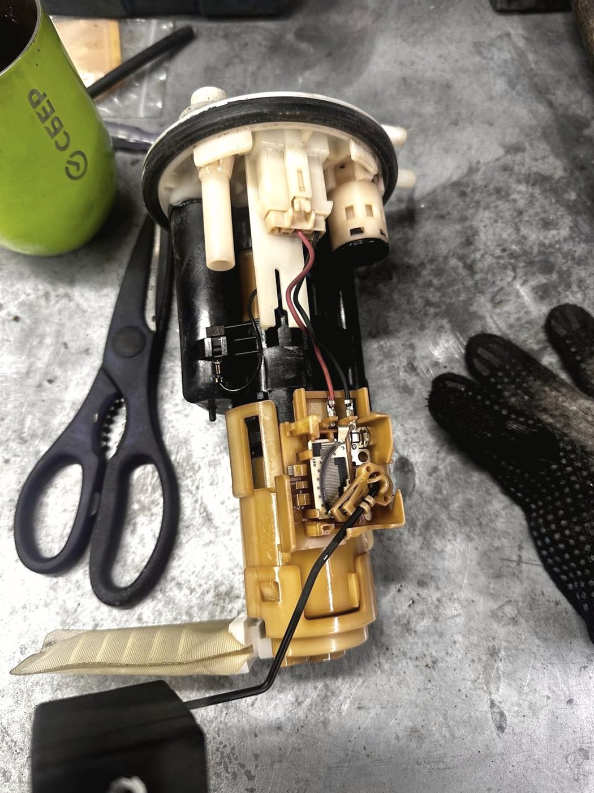
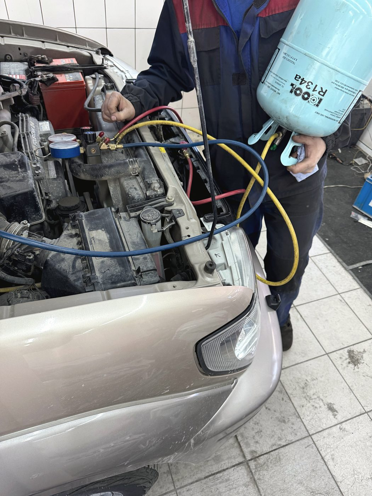
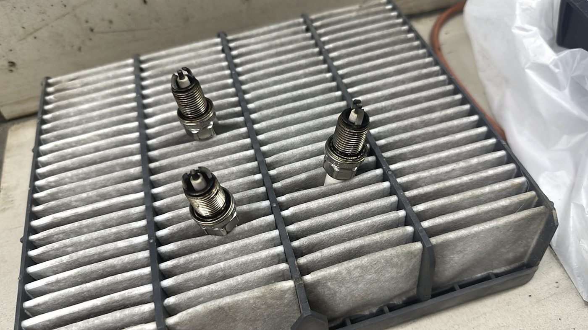
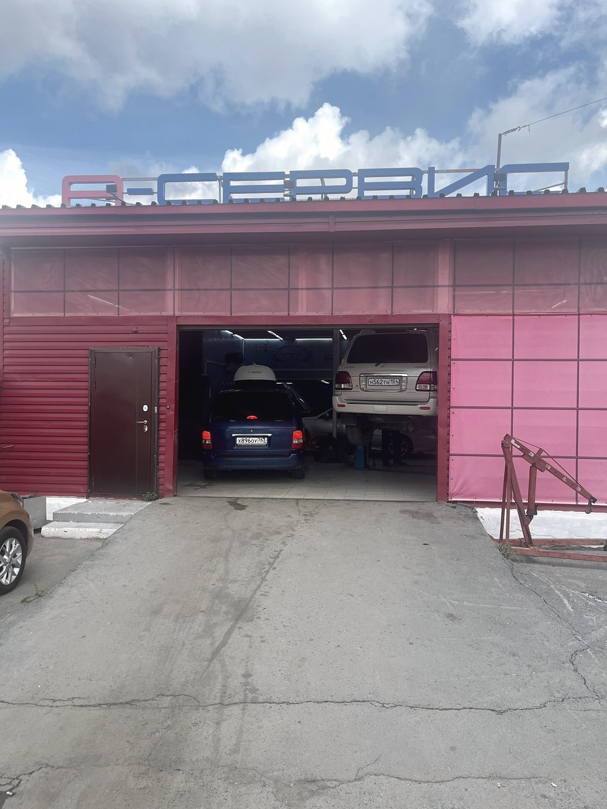
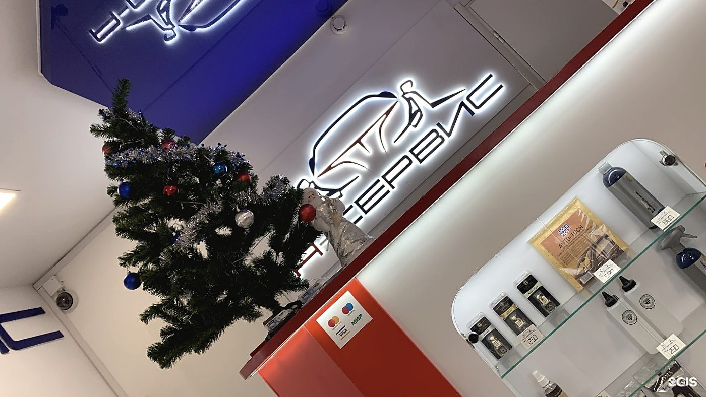

Автокомплекс · Тайгинская улица, 3 к2 · Калининский район
Машину заберёте чистой.
Это не бонус — это соседний бокс
Мы автокомплекс, а не станция в гараже: ремонт и мойка стоят под одной крышей. Поэтому после подвески или замены масла машину не нужно куда-то ещё везти — её моют здесь же, пока вы допиваете чай.

Автомойка
Ремонт заканчивается
не выдачей ключей,
а чистой машиной
Наша мойка — не сторонняя точка, а часть комплекса. Можно приехать только помыться, а можно совместить: пока идут работы, машина всё равно стоит у нас — логично вернуть её вам нормальной, а не в разводах и следах рук.
Кузов, диски, стёкла, коврики, пылесос салона. То, что обычно и имеют в виду под словом «помыть».
Без щёток и тряпок — актуально для тёмных машин и свежей полировки.
Сиденья, потолок, пластик, багажник. Делается долго, поэтому лучше по записи и на весь день.
Аккуратно, с закрытием того, что боится воды. Часто нужна перед поиском течи — грязный мотор ничего не показывает.
Одновременно моем до двух машин, есть запись и зал ожидания — можно не уезжать и не искать, где скоротать час.
Электрика
Иногда машина глохнет
не из-за мотора, а из-за косы
Жгут проводки под капотом живёт в тепле, вибрации и реагентах. Изоляция трескается, провода перетираются о кронштейн — и машина начинает вести себя необъяснимо: то глохнет, то не заводится, то горят лишние ошибки. Менять весь жгут в сборе почти никогда не нужно.
- Находим повреждённый участок прозвонкой, а не наугад
- Восстанавливаем провода с нормальной пайкой и термоусадкой
- Проверяем массы — половина «мистики» лечится именно ими
- Стартеры и генераторы: ремонт узла на месте
- Электронные системы, датчики, сигнализации

Работы
Что делаем
Ходовая часть
Стойки, рычаги, сайлентблоки, ступицы, тормоза. Отдельно — ремонт пневмоподвески, её берут не везде.
Двигатель
Бензин и дизель: течи, ГРМ, навесное, снятие головки, замена узлов по дефектовке.
Электрика и проводка
Ремонт жгутов, поиск обрывов, массы, датчики, электронные системы.
Стартеры и генераторы
Ремонт узла: щётки, регулятор, подшипники, бендикс. Со снятием и установкой.
Рулевые рейки
Течь, стук, тяжёлый руль. Ремонт с последующей проверкой углов.
Климат и кондиционер
Диагностика по давлению, поиск утечки, заправка, замена компрессора и радиатора.
Автосигнализации
Установка, ремонт, восстановление после чужой работы.
Шиномонтаж
Сезонная переобувка, ремонт колёс, балансировка. В сезон — лучше по записи.
Тюнинг
Доработки по свету, салону и ходовой. Сначала обсуждаем, что реально получится и сколько это стоит.
Автомойка и химчистка
В своём боксе, до двух машин одновременно. Можно приехать отдельно, можно после ремонта.






Отзывы · 4,9 из 5 по 212 оценкам в 2ГИС
«Я отдаю машину и приезжаю за ней, а она работает. Мне не нужно касаться этих проблем»
Uluana · 24 марта 2026 · клиент около 15 лет
Обслуживаю тут уже не первый автомобиль последние лет десять. Всегда говорят всё честно и ничего лишнего не навязывают.
Рината Ромашкина · 2 августа 2022
Ребята максимально внимательно относятся к проблемам вашего автомобиля, вникают в самую суть. Никогда не навязывают лишних услуг, всегда точно обозначают проблемы и детально описывают, что и как нужно сделать.
Дмитрий Морозов · 21 февраля 2025
Контакты
Тайгинская улица, 3 к2
Калининский район, Новосибирск
Сб, Вс 10:00–18:00